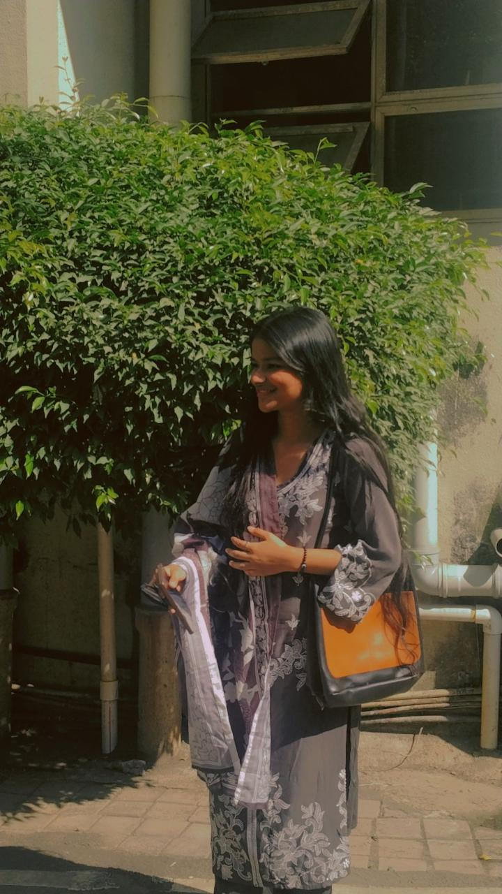
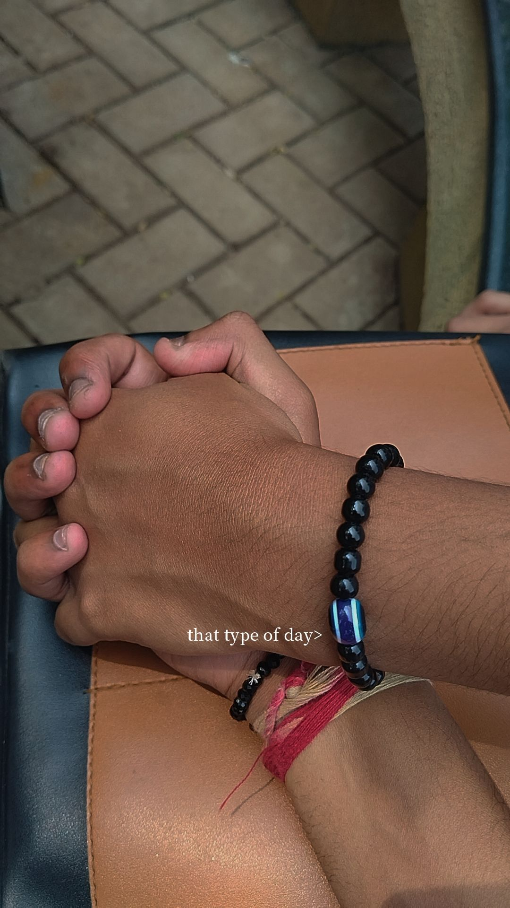
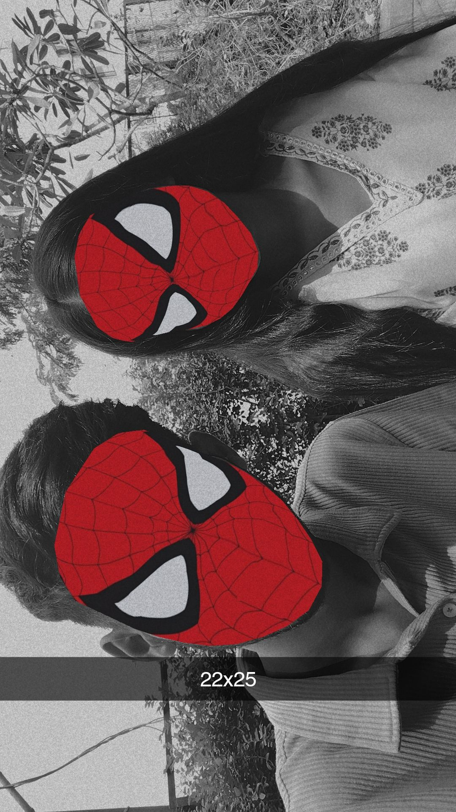

Before our Semester 1 exams, we became each other’s contacts. Nothing dramatic—just two names saved on a phone.
Slowly, conversations turned into comfort. On the first exam day, everything paused. Something quiet began.
Because of an emergency, we didn’t talk much that day. We went home separately, but the connection stayed.
On the next exam day, we met again. We talked, walked around campus, and started moving forward—together.

What we felt from the beginning wasn’t loud. It was steady. Messages, reels, late replies—because we wanted to.
We chose patience and faith. We respected each other’s fears and stayed kind.
On 27th December, our feelings finally found words.
On 29th January, we went to Siddhivinayak together and chose belief— in timing, and in us.
There were moments of yes and moments of fear. Not confusion—just emotions finding balance.

Between journeys and small gestures, we learned how to protect each other’s peace.
On 31st January, we spent hours together—no rush, no noise—just comfort.
Today, we share one dream: to grow, to become Chartered Accountants, and to build a future together.
What we have is care, patience, and home.
